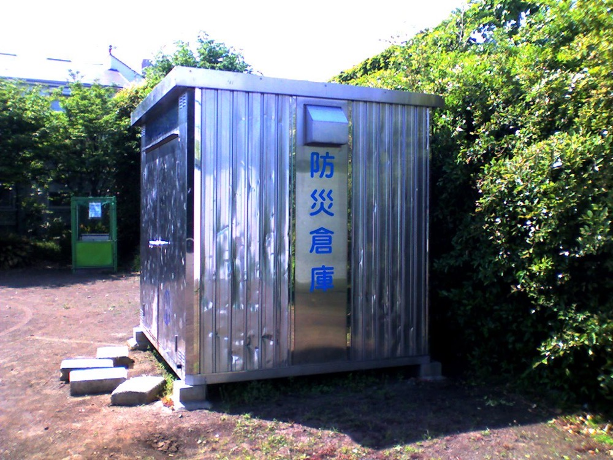
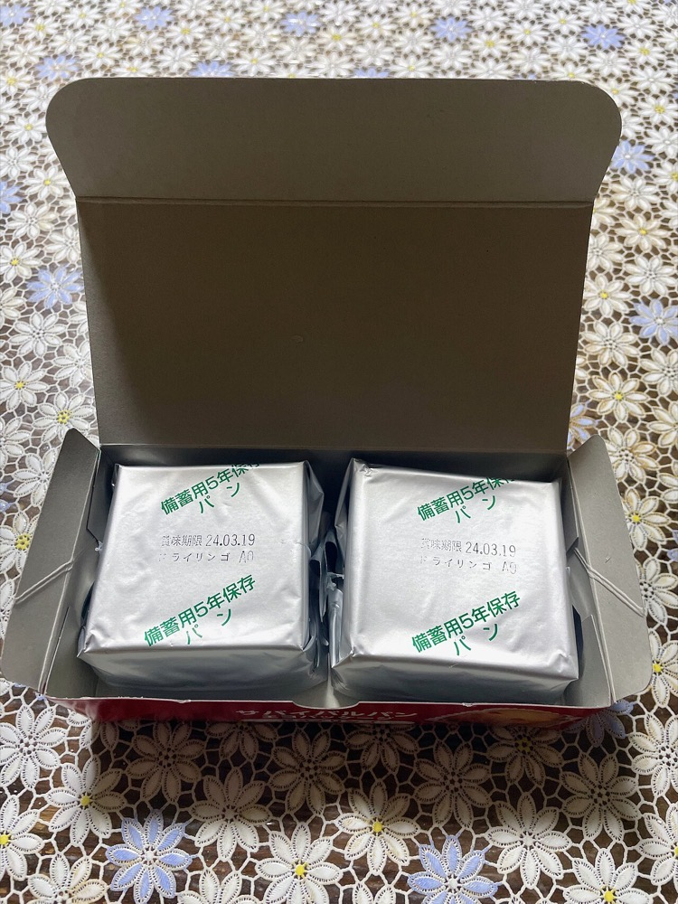
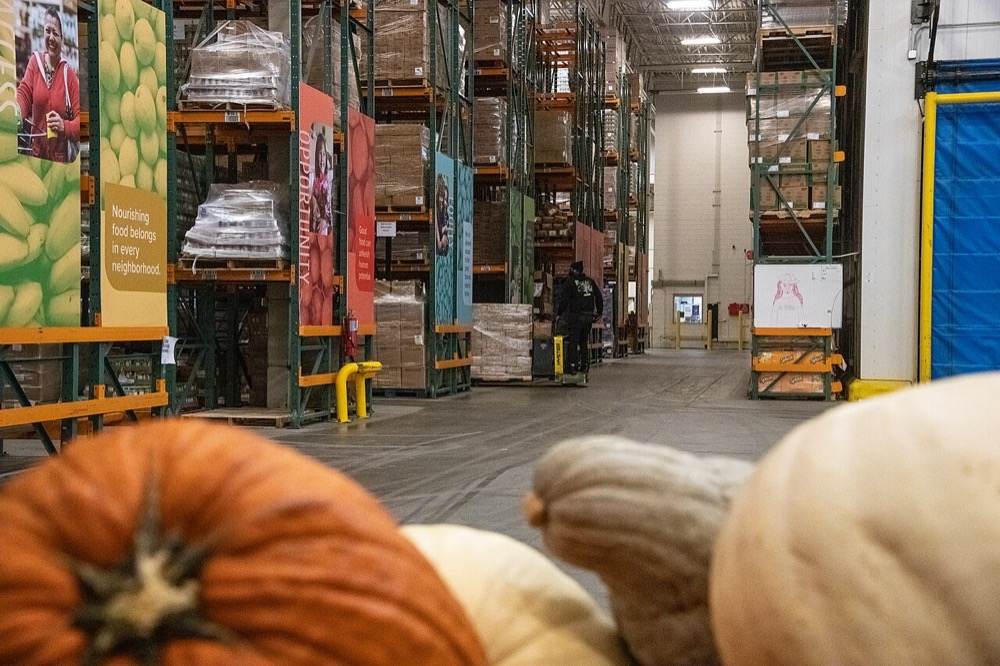

企業・病院・学校に、従業員3日分の水・食料・簡易トイレ・毛布を、調達から保管と期限管理と入替まで一括で提供する。料金は従業員1人当たりの年額で、毎年前払いで受け取る。期限が近い備蓄品はフードバンクへの寄付か社員への配布で処理し、処分費を発生させない。
防災食品の国内市場は、メーカー出荷金額ベースで2020年度258億5,400万円、2021年度見込み312億8,300万円である。2026年度の予測は319億900万円で、2021年度比102.0%の微増に留まる1。別の調査では、2024年の防災食品市場は前年比21.4%増の261億円の見込みである2。調査会社により定義が異なり、数値は一致しない。
防災食品の販売経路は、構成比の高い順に商社の直販・ネット通販・スーパーと量販店である1。法人向けの金額を示す公開統計は確認できなかった。
東京都は従業員1人当たりの備蓄の目安として、水9リットル・主食9食・毛布1枚・簡易トイレ15個を示している3。この目安から法人備蓄の市場を推計する。

推計 1人分の備蓄額 ＝ 水1,350円 ＋ 主食3,150円 ＋ 毛布1,500円 ＋ 簡易トイレ1,500円 ＝ 7,500円
水は1リットル150円、主食は1食350円、簡易トイレは1回100円と仮定した。
1人当たり年間の入替額 ＝ 水と主食4,500円 ÷ 5年 ＋ 毛布とトイレ3,000円 ÷ 10年 ＝ 1,200円
全国 ＝ 5,795万人4 × 1,200円 ≒ 695億円/年。東京都 ＝ 959万人5 × 1,200円 ≒ 115億円/年
全国の値は全事業所の従業者が備蓄した場合の上限である。東京商工会議所の2016年の調査では、全従業員分の3日分を備蓄する企業は約半数であった6。実施率を50%とすると約350億円になる。単価はすべて本ページの仮定値である。
備蓄品だけでは年700億円が上限で、1,000億円に届かない。市場の桁を千億とするには、非常用電源・蓄電池・衛星通信・安否確認などのBCP設備を含める必要がある。BCP設備を含めた市場規模は確認できなかった。
防災の情報システム分野は国内で2024年に184億円である7。法人備蓄の世界市場を示す一次情報は確認できなかった。法人に備蓄を求める制度は国ごとに異なり、日本の条例と同じ形の制度を持つ国は確認できなかった。
| 年 | 変化 | 数値 |
|---|---|---|
| 2013年4月 | 東京都帰宅困難者対策条例が施行された | 事業者に従業員の一斉帰宅の抑制と3日分の備蓄を努力義務として課した3 |
| 2016年 | 東京商工会議所の調査 | 全従業員分の3日分の備蓄は約半数。従業員10〜29人の企業では条例の認知度が47.2%6 |
| 2022年5月 | 東京都が首都直下地震の被害想定を10年ぶりに見直した | 帰宅困難者は約453万人8 |
| 2024年 | 能登半島地震と南海トラフ地震臨時情報 | 防災食品市場が前年比21.4%増の261億円の見込み2 |
| 2026年3月 | 東京都が事業所向けに備蓄の点検を呼びかけた | 量・保管場所・管理担当者の3点の確認を求め、期限切れの事例を挙げている3 |
2013年に備蓄を始めた企業は、保存期間5年の食品と水をすでに2回入れ替えている。入替は総務担当者の手作業で行われることが多く、期限切れの放置が東京都の資料でも注意事項として挙げられている3。一方で専業メーカーからは、災害のたびに大きく伸びた売上が最近は落ち着いてきたという声がある9。需要は災害の直後に集中し、平時の入替需要は管理の手間により失われている。

| 種類 | 事業者 | 動き |
|---|---|---|
| 防災食品メーカー | 尾西食品 | 非常用アルファ米の最大手で、亀田製菓グループに属する10。売上高は確認できなかった |
| 防災食品メーカー | アルファー食品、アイリスオーヤマ、サタケ | アルファ化米と長期保存食を販売する10。セット商品も扱う9 |
| 商社・通販 | 防災用品の商社とネット通販 | 防災食品の主要な販売経路である1。各社の法人向け売上は確認できなかった |
| 備蓄の一括管理 | 確認できず | 期限管理と入替を年額で請け負う事業者の売上規模は確認できなかった |
首位の条件 メーカーと通販は商品を販売するが、入替の時期の管理と期限切れ品の処理は企業側に残っている。首位になる条件は3つである。①期限と数量を事業所単位で記録し、入替を自動で発注する仕組みを持つこと。②期限前品の寄付先を確保し、処分費をゼロにすること。③従業員数の多い企業と複数年契約を結び、入替の物量でメーカーから仕入単価を下げること。
料金は従業員1人当たり年1,800円とする。1年目は都内の従業員300人以上の企業に限って営業する。

| 用途 | 金額 | 検証すること |
|---|---|---|
| 人件費 創業者、営業2名、物流担当1名 | 2,000万円 | 総務部門が年額の前払いに応じるか |
| 初回の備蓄品の仕入れ | 800万円 | 前払いを受ける前に必要となる在庫の量 |
| 期限管理システムの開発 | 400万円 | 事業所単位の入替を自動で発注できるか |
| 倉庫の賃借と配送 | 400万円 | 1人当たりの配送費 |
| 予備費 | 400万円 | |
| 合計 | 4,000万円 |
| 月 | 計画 |
|---|---|
| 1〜3月目 | 都内の従業員300人以上の企業50社の総務部門と面談し、備蓄の期限切れの比率と入替の担当者を調査する。フードバンク3団体と期限前品の受入れを協議する |
| 4〜6月目 | 10社と契約し、既存の備蓄を点検する。期限の近い品を寄付し、新しい品に入れ替える |
| 7〜9月目 | 9月の防災月間に合わせて営業を強化し、契約を30社まで広げる |
| 10〜12月目 | 契約従業員数2万人を目標とする。解約率と1人当たりの粗利を測定する |
1年目の判定基準は3つである。契約従業員数2万人、年額の前払い率80%以上、粗利率30%以上である。2万人 × 1,800円で年間売上は3,600万円になる。
| 段階 | 資金 | 金融機関 | 条件 |
|---|---|---|---|
| 1年目 | 創業融資、顧客の前払い | 日本政策金融公庫 国民生活事業 | 在庫の先行仕入れを融資で賄い、前払いで返済する |
| 2〜4年目 | 運転資金の当座貸越 | 地銀、信用金庫 | 前受金の残高と契約の更新率を審査の基準にする |
| 5年目以降 | 在庫を担保とする融資、倉庫の割賦 | 地銀、リース会社 | 入替の物量が増える時期に、仕入単価の交渉のため一括仕入れを行う |
| 買収 | 買収融資 | 地銀、商工中金 | 防災用品の地域商社を取得する場合に使う |
年額前払いのため、売上の増加は運転資金の増加を伴わない。借入は在庫の先行仕入れと買収に限られる。
| 年目 | 1 | 2 | 3 | 5 | 7 | 10 |
|---|---|---|---|---|---|---|
| 契約従業員数 万人 | 2 | 10 | 25 | 90 | 250 | 600 |
| 売上高 億円 | 0.4 | 2 | 5 | 20 | 60 | 180 |
| 営業利益 億円 | -0.2 | 0.1 | 0.4 | 2 | 6 | 20 |
| 累計投資 億円 | 0.4 | 0.8 | 1.5 | 4 | 10 | 25 |
| 借入残高 億円 | 0.1 | 0.3 | 0.6 | 2 | 5 | 12 |
| 年目 | 1 | 2 | 3 | 5 | 7 | 10 |
|---|---|---|---|---|---|---|
| 契約従業員数 万人 | 1.5 | 4 | 8 | 20 | 40 | 70 |
| 売上高 億円 | 0.3 | 0.8 | 1.5 | 4 | 8 | 15 |
| 営業利益 億円 | -0.3 | -0.1 | 0.05 | 0.2 | 0.5 | 1.0 |
| 累計投資 億円 | 0.4 | 0.6 | 0.9 | 1.8 | 3 | 5 |
| 借入残高 億円 | 0.1 | 0.2 | 0.4 | 1 | 1.5 | 2.5 |
前提
楽観の10年目でも売上高は180億円で、目安の1,000億円の2割に満たない。法人備蓄の市場は全事業所が備蓄しても年700億円が上限であり、毎年2.1倍の成長は5年目以降に続かない。
法人備蓄の一括管理という狭い領域では、10年以内に首位になる可能性がある。この領域で売上規模の大きい専業事業者を確認できなかったためである。楽観の10年目の備蓄管理108億円は、推計上限695億円の約16%にあたる。
ただし、この領域は国内市場規模1,000億円以上の条件を満たさない。条件を満たすには、BCP設備と自治体の備蓄を含めた市場で首位になる必要がある。BCP設備には電機メーカーと通信会社が参入しており、楽観の72億円では首位に届かない。停止する位置は5年目前後で、契約従業員90万人・売上20億円の時点である。この時点で都心の大企業への営業が一巡し、中小企業への営業単価が利益を上回らなくなる。
| 順 | 国 | 理由 |
|---|---|---|
| 1 | 台湾 | 地震の多い国で、日系企業の事業所がある。日本の取引先に随伴して始められる |
| 2 | フィリピン、インドネシア | 地震と台風の被害が多い。日系企業の工場の備蓄管理から始める |
| 3 | 米国西海岸 | 地震の想定がある。ただし法人の備蓄を求める制度は確認できなかった |
海外では食品の輸入規制と保存期間の基準が国ごとに異なり、日本で仕入れた備蓄品をそのまま使えない。現地での調達先を国ごとに確保することになり、日系企業の事業所向けに限られる見込みが高い。
| # | 基準 | 判定 | 根拠 |
|---|---|---|---|
| 1 | 50年、魂を燃やし続けられるか | 創業者が判定 | |
| 2 | 10年以内に、国内市場規模1,000億円以上の市場でシェア1位になれるか | × | 法人備蓄の市場は全事業所が備蓄しても推計年約700億円で、1,000億円の条件を満たさない |
| 3 | 4,000万円で始められ、融資で伸ばせるか | ◎ | 設備投資が小さく、年額前払いで在庫の資金を賄える |
| 4 | グローバルなインフラになり得るか | × | 備蓄の制度と食品の基準が国ごとに異なり、日系企業の事業所向けに限られる |
| 5 | 営業力が最初の売上に直接結びつくか | ◎ | 発注者は大企業の総務部門で、法人営業の面談がそのまま契約になる |
| 6 | 同じビジョンを共有する仲間を誘える事業か | 創業者が判定 | |
| 7 | 本業が早く現金を生み、返済と出資の原資になるか | ○ | 前払いで現金は先に入るが、10年目でも営業利益は楽観で20億円に留まる |
| 8 | 投資先を束ねる群の中核になれるか | △ | 総務部門との接点は共有できるが、周辺事業の市場もそれぞれ小さい |
| 9 | 成長の資金源がA・B・Cのどれに当たるか | A | 従業員1人当たりの年額を前払いで受け取る |
1. 努力義務に強制力がない 条例の備蓄は努力義務であり、備蓄しない企業に罰則はない3。災害のない年が続くと予算が削られる。対策は期限前品の寄付による社会貢献の実績を企業に報告し、予算の名目を防災から人的資本の開示に広げることである。予算削減そのものは潰せない。
2. 需要が災害の直後に集中する 専業メーカーも、災害のたびに伸びた売上が落ち着いてきたと述べている9。災害直後は仕入れが逼迫し、平時は営業が進まない。対策は複数年契約で平時に契約を積み、災害直後は既存顧客への供給を優先することである。
3. 単価の低さ 1人当たり年1,800円は、従業員1,000人の企業でも年180万円である。営業1件当たりの売上が小さく、中小企業向けでは営業費が粗利を上回る。対策はビルの管理会社と組み、テナント全体を一括で契約することである。
4. 大手の参入 警備会社やオフィス用品の通販会社は、すでに同じ総務部門と取引がある。同じサービスを付帯サービスとして無料に近い価格で提供されると、単独の事業では対抗できない。この場合は潰せず、大手への事業売却が現実的な出口になる。


.jpg){kind=link}